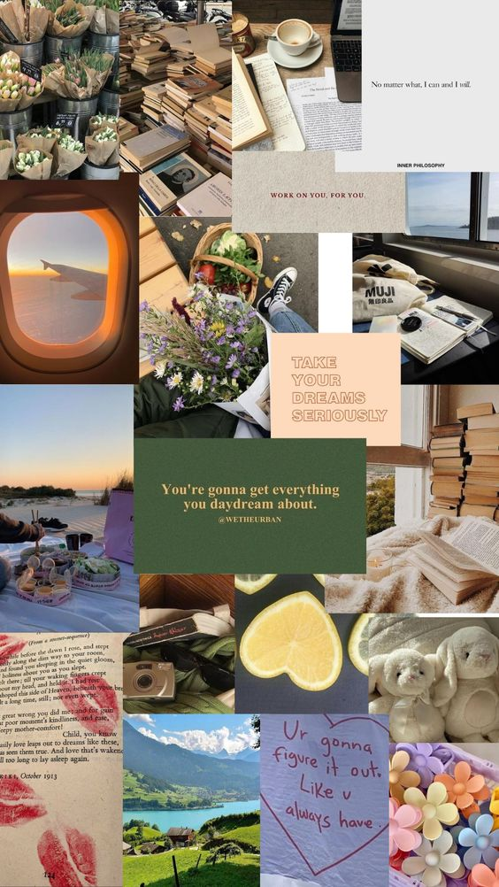

HOME
PASATIEMPOS
- Mi pasatiempo favorito es cocinar es lo que más me gusta hacer .
Cocinar es una actividad que trae muchos beneficios
En la cocina pones a prueba tu creatividad, paciencia y capacidad de innovar. Aunque parezca una
actividad básica, te permite desarrollar atención en los detalles y seguridad.
Otro de mi pasatiempo favorito es la fotografía ver lo hermoso que es un paisaje los animales la
capacidad de capturar el mundo como lo ve, compartir las cosas que importan y lo que emociona, esto es
lo que hace que la fotografía sea especial para mi..
